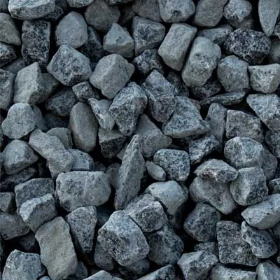
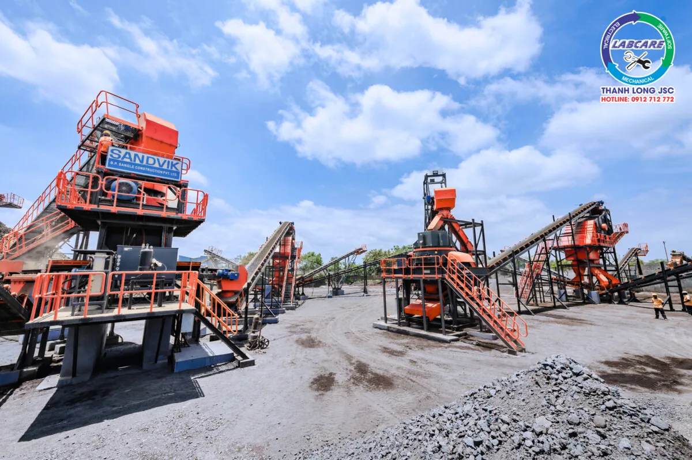
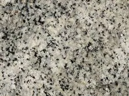
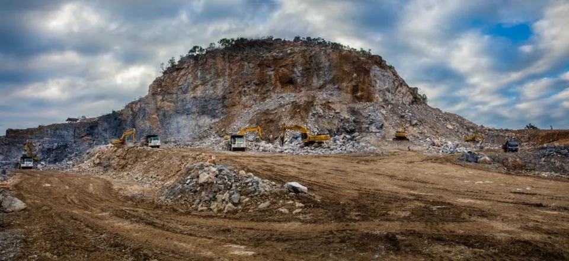
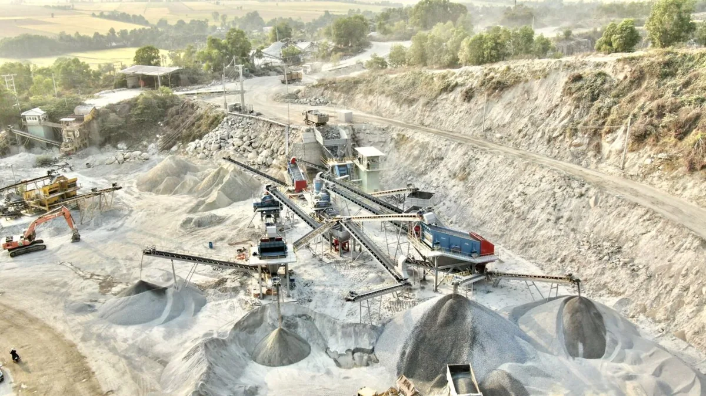

Trong hoạt động xây dựng hiện đại, đá nghiền là nguồn nguyên liệu thiết yếu để sản xuất bê tông, làm đường, xây dựng các công trình công nghiệp và dân dụng. Việc lựa chọn loại máy nghiền đá xây dựng phù hợp, sẽ đáp ứng nhu cầu sản xuất là bước quan trọng quyết định đến hiệu suất, chi phí và chất lượng sản phẩm.

Tại sao việc chọn máy nghiền đá xây dựng phù hợp lại quan trọng?
Những yếu tố quan trọng bao gồm:
- Chất lượng sản phẩm nghiền đạt chuẩn
- Giảm chi phí bảo trì, dịch vụ và ngừng máy
- Đáp ứng công suất theo kế hoạch
- Tối ưu hoá lưu lượng nguyên liệu, giám sát và tự động hóa quy trình

Phân tích theo từng loại đá giúp chọn máy nghiền đá xây dựng phù hợp:
Đá granite (hoa cương):
- Đây là loại đá rất cứng, kháng mài mòn cao, thích hợp cho các công trình cầu đường, bên vững cao.
- Gợi ý máy nghiền: Kết hợp máy nghiền hàm Máy Nghiền Đá Thanh Long để nghiền thô ban đầu, sau đó chuyển sang máy nghiền côn để nghiền trung và nghiền VSI để tạo cát nhân tạo.

Đá vôi:
- Là loại đá mềm hơn, thường được dùng nhiều trong xây dựng dân dụng hoặc đổ móng.
- Dễ vỡ và đòi hỏi thiết bị nghiền nhẹ, tối ưu hóa tiêu hao điện năng.
- Gợi ý: Máy nghiền hàm + nghiền côn hoặc máy nghiền bánh đà.

Đá bazan:
- Tương đương granite về độ cứng nhưng giòn hơn, phù hợp để sản xuất đá dăm, cát nghiền đường cao tốc.
- Sử dụng nghiền VSI sẽ giúp tạo hình hạt đẹp, biên độ đồng đều cao.
Gợi ý dây chuyền nghiền phổ biến:
| Loại dự án | Thiết bị gợi ý |
|---|---|
| 100-150 tph | Hàm nghiền với độ mở hàm 600×900 + Côn + VSI |
| 200-300 tph | Hàm nghiền với độ mở hàm 750×1060 + Côn SC350 + VSI |
| Trên 350 tph | Hàm nghiền với độ mở hàm 900×1200 + Côn SC650 + VSI |
Tục các dây chuyền này có thể thiết kế module hoặc trọn gói theo nhu cầu về mặt bằng, nguồn đá, công suất hoặc chi phí đầu tư.
Lời khuyến cáo từ chuyên gia:
Khi lựa chọn dây chuyền nghiền đá xây dựng phù hợp, doanh nghiệp cần xác định rõ:
- Loại nguồn đá (granite, bazan, vôi, sỏi…)
- Kế hoạch công suất và sản lượng
- Kích thước đầu vào và đầu ra mong muốn
- Khả năng tài chính và chi phí bảo trì, vận hành
Ngoài ra, việc lựa chọn thiết bị từ thương hiệu uy tín sẽ giúc doanh nghiệp an tâm về chất lượng, dịch vụ sau bán và tiết kiệm chi phí trong dài hạn.

Liên hệ tư vấn chuyên sâu:
Công ty CP TB và DV KT Thanh Long
- Website: https://thegioimaynghienda.com
- Zalo hỗ trợ 24/7: 0912 712 772
- Email: dichvu@labcare.com.vn
- Kính nghiệm hơn 10 năm trong lĩnh vực nghiền đá công nghiệp
Hãy để Máy Nghiền Đá Thanh Long trở thành đối tác đồng hành giúp doanh nghiệp bạn tối ưu hoá quy trình sản xuất, tiết kiệm chi phí và gia tăng hiệu suất.